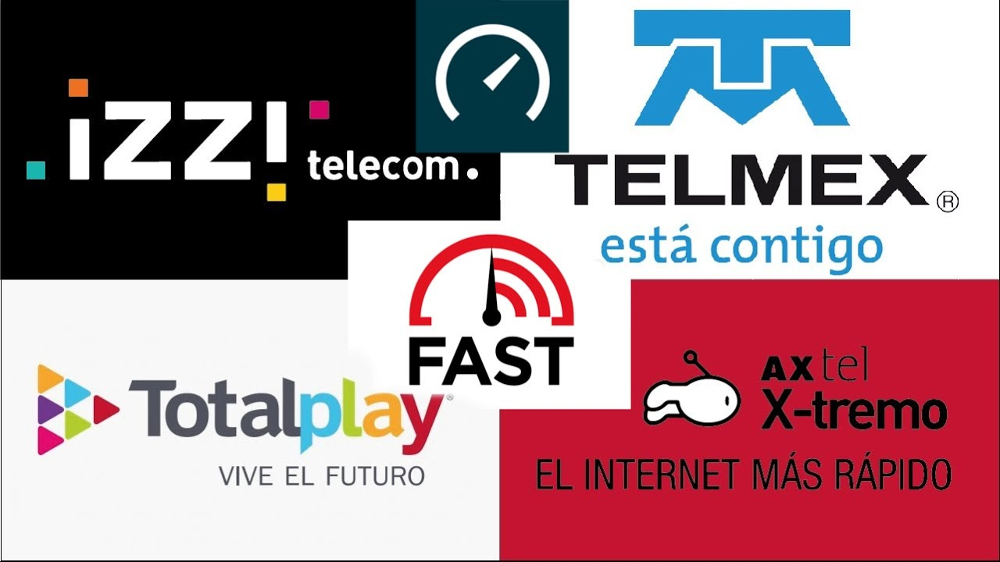
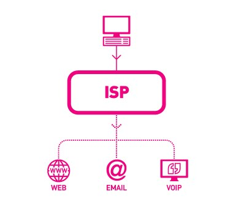
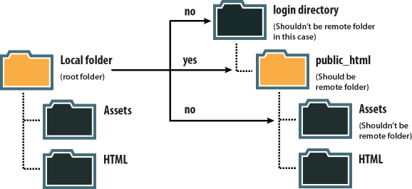

¿Que es el internet?

Internet es una red mundial formada por millones de computadoras de todo tipo y plataforma, conectadas entre sí por diversos medios y equipos de comunicación que mediante una serie de protocolos (TCP/IP) hacen posible que los usuarios podamos localizar, seleccionar e intercambiar información.
Proveedores de Internet 
Son empresas dedicadas a conectar a Internet a los usuarios, o las distintas redes que tengan, y a dar el mantenimiento necesario para que el acceso funcione correctamente. También ofrece servicios relacionados, como alojamiento web o registro de dominios, entre otros.
Tipos de proveedores de internet
ISP: Internet Service Provider
- Brindan conexion a internet
- Telefonía
- Televisión en algunos casos
- Soporte y mantenimiento, entre otros.
IPP: Internet Presence Provider

- Servicios de Hosting
- Nombres de Dominio
- Correos corporativos
- Soporte, entre otros.
Protocolos de Aplicacion
Conjunto de reglas que permiten que dos o mas entidades de un sistema se comuniquen entre ellos para trasmitir información.

Carpeta Local vs Carpeta remota
Carpeta local: Esta ubicada en el disco duro de tu computadora personal.
Carpeta remota: Esta ubicada en un servidor ubicado en un lugar remoto con acceso a internet (Proveedor de Hosting )
IX vs UX
UX: Se refieren a un conjunto de factores relativos a la interacción del usuario con un entorno o un dispositivo en concreto cuyo resultado es la generación de una percepción positiva o negativa de dicho servicio. IX: La interfaz de usuario es el medio con que el usuario puede comunicarse con una máquina, equipo, computadora o dispositivo, y comprende todos los puntos de contacto entre el usuario y el equipo. (Botones, imágenes, enlaces, menu etc.)